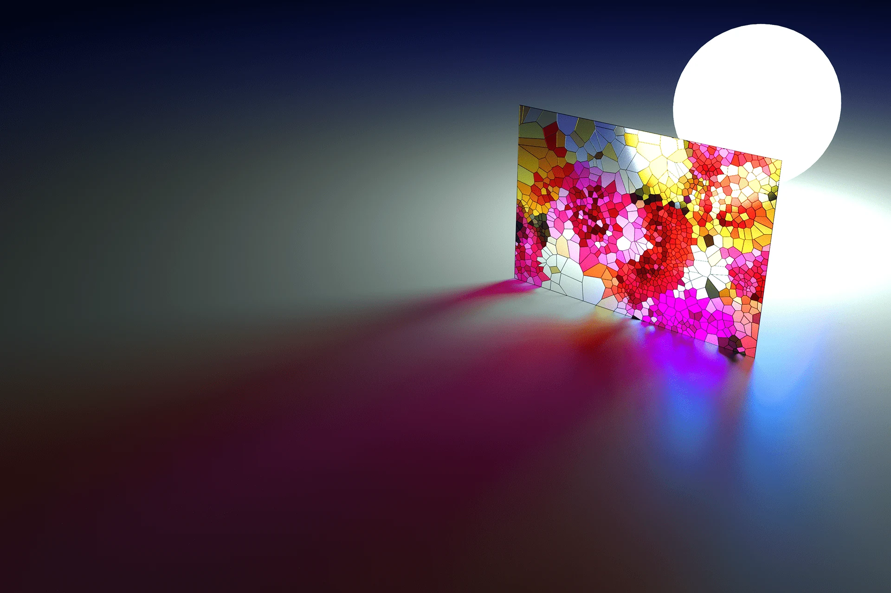

This Houdini Digital Asset (HDA) procedurally creates mosaic and stained glass geometry directly from input raster images. Surface geometry adapts parametrically according to localized image color variation and luminance gradients, distributing higher geometric density in areas of high visual complexity. The tool automatically synthesizes lead came border geometry with variable width and depth between adjacent glass tiles.
